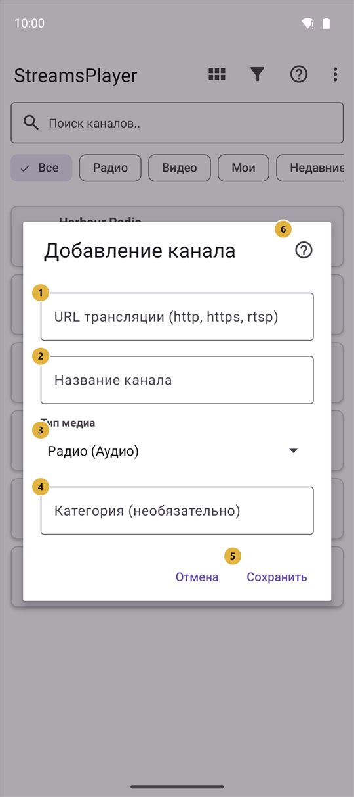
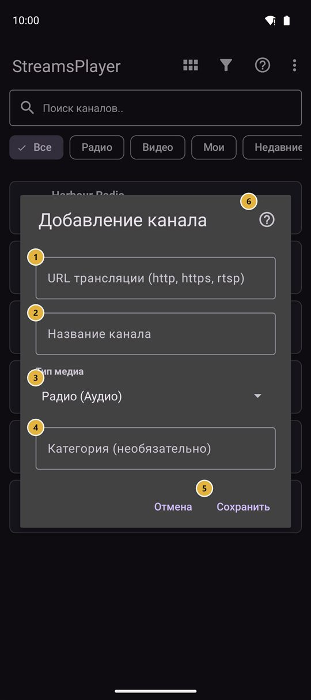

Добавить канал
Для чего этот экран
Добавьте в список одну радиостанцию, видеопоток или камеру по адресу. Эта же форма меняет канал, добавленный раньше.


Порядок действий
- Введите или вставьте адрес 1. Он начинается с http, https или rtsp и содержит имя сервера.
- Дайте каналу название 2 или оставьте поле пустым: тогда названием станет адрес.
- Укажите, какой это поток 3, чтобы он открывался в нужном плеере.
- Добавьте категорию 4, если хотите потом находить канал по ней.
- Нажмите «Сохранить» 5. Канал появится в списке, а форма закроется.
Элементы
1URL трансляции (http, https, rtsp)Где находится поток.
Адрес, который начинается с http, https или rtsp. Если в нём нет имени сервера, форма скажет об этом и останется открытой. Адрес с логином и паролем работает, но при попытке поделиться таким каналом приложение сначала попросит подтверждение.
- Отмена
- Пока вы не нажали «Сохранить», ничего не сохраняется.
2Название каналаКак канал называется в вашем списке.
Любой текст. Если оставить поле пустым, названием будет адрес. Позже название можно изменить через «Редактировать».
3Тип медиаРадио, видео или RTSP.
Радио (аудио) играет в панели радио и продолжает играть в фоне. Видео (HLS, DASH, MP4) и RTSP открываются в полноэкранном плеере. Выбирайте по тому, что несёт поток, а не по тому, откуда он идёт.
4Категория (необязательно)Необязательная метка для вашей сортировки.
Свободный текст. Категория появится среди категорий в «Фильтре и сортировке».
5СохранитьДобавляет канал или сохраняет изменения.
Сначала проверяет адрес. Если всё в порядке, канал добавляется и форма закрывается.
- Отмена
- Удалите канал в его листе действий или отредактируйте снова.
6СправкаОткрывает эту страницу.
Форма остаётся открытой под страницей вместе с тем, что вы ввели; «Назад» возвращает к ней.
- Сочетание клавиш
- F1